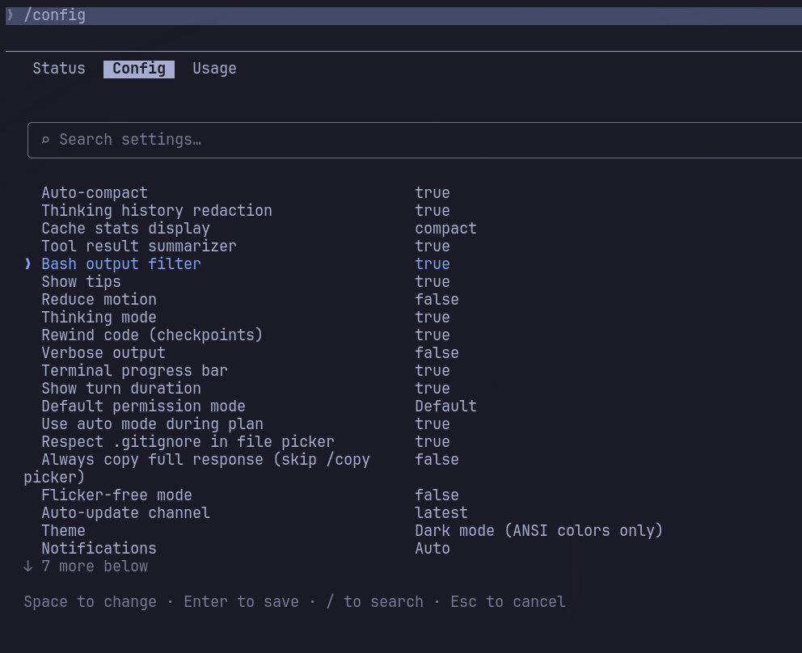

Bash Output Filter
Removes CLI noise before it reaches the model — saving tokens, preserving signal.
Overview
CLI tools are built for humans. They're chatty by design. When Claudio runs a command, all of that noise goes straight into the model's context — costing tokens and crowding out the signal that actually matters.
The Bash Output Filter intercepts every Bash tool result and removes progress bars, download lines, verbose headers, and passing test lines, while preserving errors, warnings, and actionable output.
On by default. No configuration required.
Measured across a typical 30-minute session after Phase 12 coverage (JS/Python/Go/Rust package managers, linters, git remote ops). Aggregate measurement across 30 Phase 12 sample fixtures: 75.1% byte reduction (36 170 B → 8 999 B). Reproducible via bun test src/outputFilter/Bash/phase12Report.test.ts.
Commands
The filter ships with built-in rules for the most common CLI tools. Each rule is conservative: on any failure condition, full output is preserved.
bundle install
Strips every Fetching <gem> line. Collapses to a one-liner on clean success. On failure (any error / conflict / could not find line), the full output is preserved.
Before
Fetching gem metadata from https://rubygems.org/..........
Fetching addressable 2.8.7
Fetching bigdecimal 3.1.8
Fetching concurrent-ruby 1.3.4
Fetching connection_pool 2.4.1
Fetching crass 1.0.6
Installing addressable 2.8.7
Installing bigdecimal 3.1.8
Installing concurrent-ruby 1.3.4
Bundle complete! 42 Gemfile dependencies, 187 gems now installed.After
✓ bundle install completedpytest
Strips warnings summary, deprecation notices, and PytestUnraisableExceptionWarning blocks. Caps at 100 lines. Collapses on a clean N passed result. On failure (FAILED / ERROR present), full output is preserved including tracebacks.
Before
============================= warnings summary ==============================
tests/test_auth.py::test_login
/usr/local/lib/python3.11/site-packages/jwt/algorithms.py:393: CryptographyDeprecationWarning: ...
PytestDeprecationWarning: Support for nose-style setup/teardown is deprecated and will be removed.
============================= warnings summary ==============================
PASSED tests/test_auth.py::test_login
PASSED tests/test_api.py::test_health
PASSED tests/test_api.py::test_create_user
================================= 3 passed in 0.84s =================================After
✓ pytest: all tests passedrspec
Strips Randomized with seed N footer. Collapses on N examples, 0 failures.
Before
.......
Finished in 0.21394 seconds (files took 1.22 seconds to load)
7 examples, 0 failures
Randomized with seed 54321After
Finished in 0.21394 seconds (files took 1.22 seconds to load)
7 examples, 0 failuresgo test -v
Strips === RUN, === PAUSE, === CONT, --- PASS:, and bare PASS lines. Collapses on ok <pkg> <time>.
Before
=== RUN TestHandleRequest
=== RUN TestHandleRequest/valid_payload
=== RUN TestHandleRequest/missing_field
--- PASS: TestHandleRequest/valid_payload (0.00s)
--- PASS: TestHandleRequest/missing_field (0.00s)
--- PASS: TestHandleRequest (0.00s)
=== RUN TestParseConfig
--- PASS: TestParseConfig (0.00s)
PASS
ok github.com/myorg/myapp 0.015sAfter
✓ go test: all tests passedjest
Strips RUNS ... carousel lines and indented ✓ test name (Nms) per-test lines. Collapses on Tests: N passed, N total.
Before
RUNS src/utils/format.test.ts
RUNS src/api/client.test.ts
PASS src/utils/format.test.ts
✓ formats currency correctly (3ms)
✓ handles null input (1ms)
✓ rounds to 2 decimal places (1ms)
PASS src/api/client.test.ts
✓ sends correct headers (12ms)
✓ retries on 429 (45ms)
Test Suites: 2 passed, 2 total
Tests: 5 passed, 5 total
Snapshots: 0 total
Time: 1.234sAfter
✓ jest: all tests passedvitest
Strips the RUN v... banner and indented ✓ describe > it Nms per-test lines. Collapses on Tests N passed (N).
Before
RUN v1.6.0 /home/user/project
✓ src/utils/string.test.ts (3)
✓ truncate > truncates long strings 2ms
✓ truncate > preserves short strings 0ms
✓ truncate > handles empty string 0ms
Test Files 1 passed (1)
Tests 3 passed (3)
Start at 14:32:01
Duration 312msAfter
✓ vitest: all tests passedbun test
Strips the bun test v... banner and per-test ✓ name [Nms] lines. Collapses on N pass with 0 fail.
Before
bun test v1.1.8 (9f27a12)
src/utils/hash.test.ts:
✓ hashes a string [0.82ms]
✓ returns consistent results [0.11ms]
✓ handles empty input [0.09ms]
3 pass
0 fail
Ran 3 tests across 1 files. [48.00ms]After
✓ bun test: all tests passedmocha
Strips indented ✓ name (Nms) per-test lines. Collapses on N passing (Xms).
Before
Authentication
✓ rejects invalid token (8ms)
✓ accepts valid JWT (3ms)
✓ refreshes expired session (14ms)
Database
✓ connects on first call (22ms)
✓ pools connections (1ms)
5 passing (51ms)After
✓ mocha: all tests passedplaywright test
Strips indented ✓ N [project] › file.spec.ts:L:C › title (Ns) per-test lines. Collapses on N passed (Xm Ys).
Before
Running 4 tests using 2 workers
✓ 1 [chromium] › tests/auth.spec.ts:12:5 › login flow › shows dashboard (1.2s)
✓ 2 [chromium] › tests/auth.spec.ts:28:5 › login flow › redirects on logout (0.8s)
✓ 3 [firefox] › tests/auth.spec.ts:12:5 › login flow › shows dashboard (1.4s)
✓ 4 [firefox] › tests/auth.spec.ts:28:5 › login flow › redirects on logout (0.9s)
4 passed (6s)After
✓ playwright: all tests passedrubocop
Strips the "new cops available" preamble (cop-entry headers, Enabled: lines, intro paragraphs). Collapses blank-line runs created by the strip.
Before
The following cops were added to RuboCop, but are not configured. Please
set Enabled to either `true` or `false` in your `.rubocop.yml` file.
Please also note that you can opt-in to new cops by default...
Style/RedundantLineContinuation: # new in 1.36
Enabled: true
Gemspec/AddRuntimeDependency: # new in 1.65
Enabled: true
For more information: https://docs.rubocop.org/rubocop/versioning.html
Inspecting 42 files
..........................................
42 files inspected, no offenses detectedAfter
Inspecting 42 files
..........................................
42 files inspected, no offenses detectedls -la
Replaces each long-format row with [type] name. Preserves the total N header. Symlink targets are preserved.
Before
total 48
drwxr-xr-x 1 viudes viudes 680 May 5 14:20 .
drwxr-xr-x 1 viudes viudes 460 May 4 09:11 ..
-rw-r--r-- 1 viudes viudes 1024 May 5 13:55 .env
drwxr-xr-x 1 viudes viudes 200 May 5 14:20 src
-rw-r--r-- 1 viudes viudes 2048 May 3 10:00 package.json
lrwxrwxrwx 1 viudes viudes 12 May 1 08:00 dist -> build/distAfter
total 48
[d] .
[d] ..
[-] .env
[d] src
[-] package.json
[l] dist -> build/distcargo check / cargo build
Strips Compiling <dep> v1.2.3 (transitive deps, no path), Checking <dep> v1.2.3, and download/update lines. Your own crate is always preserved. Collapses on Finished ... in Xs.
Before
Checking libc v0.2.155
Checking proc-macro2 v1.0.86
Checking quote v1.0.36
Checking syn v2.0.68
Checking tokio v1.38.0
Checking serde v1.0.203
Checking serde_json v1.0.120
Checking my-project v0.1.0 (/home/viudes/my-project)
Finished `dev` profile [unoptimized + debuginfo] target(s) in 4.32sAfter
Checking my-project v0.1.0 (/home/viudes/my-project)
Finished `dev` profile [unoptimized + debuginfo] target(s) in 4.32sOn clean success, collapses further to:
✓ cargo check: oktsc / tsc --noEmit
Strips ~~~~~ underline decoration lines and the trailing Errors Files summary table (which duplicates the inline error count). On a clean run, emits nothing.
Before (with errors)
src/api/client.ts(42,5): error TS2322: Type 'string' is not assignable to type 'number'.
const timeout: number = config.timeout
~~~~~~~
src/utils/parse.ts(17,12): error TS2345: Argument of type 'unknown' is not assignable to parameter of type 'string'.
Found 2 errors in 2 files.
Errors Files
1 src/api/client.ts:42
1 src/utils/parse.ts:17After
src/api/client.ts(42,5): error TS2322: Type 'string' is not assignable to type 'number'.
const timeout: number = config.timeout
src/utils/parse.ts(17,12): error TS2345: Argument of type 'unknown' is not assignable to parameter of type 'string'.
Found 2 errors in 2 files.ps aux
Strips kernel thread rows (VSZ=0, RSS=0, command in brackets). Caps at 50 lines.
Before
USER PID %CPU %MEM VSZ RSS TTY STAT START TIME COMMAND
root 1 0.0 0.0 167364 11504 ? Ss May04 0:03 /sbin/init
root 2 0.0 0.0 0 0 ? S May04 0:00 [kthreadd]
root 3 0.0 0.0 0 0 ? I< May04 0:00 [rcu_gp]
root 4 0.0 0.0 0 0 ? I< May04 0:00 [rcu_par_gp]
viudes 1234 0.1 0.5 812344 42100 pts/0 Sl+ 14:20 0:01 node dist/cli.mjs
viudes 5678 0.0 0.1 12345 8900 pts/1 Ss 14:22 0:00 bashAfter
USER PID %CPU %MEM VSZ RSS TTY STAT START TIME COMMAND
root 1 0.0 0.0 167364 11504 ? Ss May04 0:03 /sbin/init
viudes 1234 0.1 0.5 812344 42100 pts/0 Sl+ 14:20 0:01 node dist/cli.mjs
viudes 5678 0.0 0.1 12345 8900 pts/1 Ss 14:22 0:00 bashgit log rewrite
Injects --oneline before the command runs and caps output at 50 lines. The verbose multi-line format is never sent to the model.
Before — git log
commit a1b2c3d4e5f6789012345678901234567890abcd
Author: Viudes <viudes@example.com>
Date: Mon May 5 14:20:00 2025 +0000
fix(auth): handle token expiry on refresh
commit b2c3d4e5f6789012345678901234567890abcde
Author: Viudes <viudes@example.com>
Date: Sun May 4 10:00:00 2025 +0000
feat(api): add rate limit headersAfter — git log --oneline, capped at 50
a1b2c3d fix(auth): handle token expiry on refresh
b2c3d4e feat(api): add rate limit headersgit status rewrite
Replaced with git status --porcelain --branch before the command runs.
Before — git status
On branch main
Your branch is up to date with 'origin/main'.
Changes not staged for commit:
(use "git add <file>..." to update what will be committed)
(use "git restore <file>..." to discard changes in working directory)
modified: src/api/client.ts
Untracked files:
(use "git add <file>..." to include in what will be committed)
src/api/newfeature.ts
no changes added to commit (use "git add" and/or "git commit -a")After — git status --porcelain --branch
## main...origin/main
M src/api/client.ts
?? src/api/newfeature.tsgit diff
Strips diff --git a/X b/X header lines, index <hash>..<hash> lines, and \ No newline at end of file markers. Hunks are never touched. Collapses to ✓ git diff: no changes on empty output.
Before
diff --git a/src/api/client.ts b/src/api/client.ts
index a1b2c3d..d4e5f6a 100644
--- a/src/api/client.ts
+++ b/src/api/client.ts
@@ -40,7 +40,7 @@ export class ApiClient {
async get(path: string) {
- const timeout = 5000
+ const timeout = 30_000
return this.request('GET', path, { timeout })
}
\ No newline at end of fileAfter
--- a/src/api/client.ts
+++ b/src/api/client.ts
@@ -40,7 +40,7 @@ export class ApiClient {
async get(path: string) {
- const timeout = 5000
+ const timeout = 30_000
return this.request('GET', path, { timeout })
}git show
Same diff-body cleanup as git diff, plus collapses Author: Name <email>\nDate: ... into a single Author: Name (date) line.
Before
commit a1b2c3d4e5f6789012345678901234567890abcd
Author: Viudes <viudes@example.com>
Date: Mon May 5 14:20:00 2025 +0000
fix(auth): handle token expiry on refresh
diff --git a/src/auth/refresh.ts b/src/auth/refresh.ts
index 0000000..1111111 100644
--- a/src/auth/refresh.ts
+++ b/src/auth/refresh.ts
@@ -10,6 +10,8 @@ export async function refreshToken(token: string) {
+ if (isExpired(token)) throw new TokenExpiredError()After
commit a1b2c3d4e5f6789012345678901234567890abcd
Author: Viudes (2025-05-05)
fix(auth): handle token expiry on refresh
--- a/src/auth/refresh.ts
+++ b/src/auth/refresh.ts
@@ -10,6 +10,8 @@ export async function refreshToken(token: string) {
+ if (isExpired(token)) throw new TokenExpiredError()git commit
Replaces the [branch hash] subject\n N files changed... block with ✓ committed <hash>. Strips create mode / delete mode lines.
Before
[main a1b2c3d] fix(auth): handle token expiry on refresh
2 files changed, 14 insertions(+), 3 deletions(-)
create mode 100644 src/auth/errors.tsAfter
✓ committed a1b2c3dgit pull
Strips remote progress noise (Enumerating / Counting / Compressing / Writing / Resolving / Unpacking). Preserves From, Updating, fast-forward lines, diff-stat, and conflict markers.
Before
remote: Enumerating objects: 5, done.
remote: Counting objects: 100% (5/5), done.
remote: Compressing objects: 100% (3/3), done.
remote: Total 4 (delta 2), reused 0 (delta 0), pack-reused 0
Unpacking objects: 100% (4/4), done.
From github.com:myorg/myapp
a1b2c3d..d4e5f6a main -> origin/main
Updating a1b2c3d..d4e5f6a
Fast-forward
src/api/client.ts | 2 +-
1 file changed, 1 insertion(+), 1 deletion(-)After
From github.com:myorg/myapp
a1b2c3d..d4e5f6a main -> origin/main
Updating a1b2c3d..d4e5f6a
Fast-forward
src/api/client.ts | 2 +-
1 file changed, 1 insertion(+), 1 deletion(-)git push
Strips transfer protocol lines (Enumerating / Counting / Delta / Compressing / Writing / Total / Resolving). Preserves remote: lines (server-side hooks, PR URLs) and the To <remote> result.
Before
Enumerating objects: 5, done.
Counting objects: 100% (5/5), done.
Delta compression using up to 8 threads
Compressing objects: 100% (3/3), done.
Writing objects: 100% (4/4), 1.23 KiB | 1.23 MiB/s, done.
Total 4 (delta 2), reused 0 (delta 0), pack-reused 0
remote: Resolving deltas: 100% (2/2), completed with 2 local objects.
remote: Create a pull request: https://github.com/myorg/myapp/pull/new/my-branch
To github.com:myorg/myapp.git
a1b2c3d..d4e5f6a my-branch -> my-branchAfter
remote: Create a pull request: https://github.com/myorg/myapp/pull/new/my-branch
To github.com:myorg/myapp.git
a1b2c3d..d4e5f6a my-branch -> my-branchgit blame
Collapses hash (Author YYYY-MM-DD HH:MM:SS +TZ line) to hash YYYY-MM-DD line). Removes author name, email, time-of-day, and timezone.
Before
a1b2c3d4 (Viudes Ferreira 2025-04-10 11:23:45 +0100 42) export async function fetchUser(id: string) {
b2c3d4e5 (Maria Santos 2025-03-22 09:14:02 +0000 43) const res = await api.get(`/users/${id}`)After
a1b2c3d4 2025-04-10 42) export async function fetchUser(id: string) {
b2c3d4e5 2025-03-22 43) const res = await api.get(`/users/${id}`)wget
Strips CA / Resolving / Connecting chatter, the "HTTP request sent…" 200/206 success line, Length: / Saving to: headers, and the dot-progress block. Preserves any non-success HTTP status (3xx redirects, 4xx/5xx) and the final saved [bytes/total] summary. -q, --quiet, -O - / -qO- / --output-document=- are passed through unchanged (output is being piped or already silenced).
Before (74 lines, 5 KB — clipped)
--2026-05-12 09:14:02-- https://releases.example.com/dist/big-package-1.2.3.tar.gz
Loaded CA certificate '/etc/ssl/certs/ca-certificates.crt'
Resolving releases.example.com... 151.101.1.91, 151.101.65.91, ...
Connecting to releases.example.com|151.101.1.91|:443... connected.
HTTP request sent, awaiting response... 200 OK
Length: 52428800 (50M) [application/gzip]
Saving to: 'big-package-1.2.3.tar.gz'
0K .......... .......... .......... .......... .......... 0% 2.34M 21s
50K .......... .......... .......... .......... .......... 0% 4.12M 17s
... (60+ more dot-progress lines) ...
51200K .......... .......... 100% 14.7M=3.4s
2026-05-12 09:14:05 (14.7 MB/s) - 'big-package-1.2.3.tar.gz' saved [52428800/52428800]After
--2026-05-12 09:14:02-- https://releases.example.com/dist/big-package-1.2.3.tar.gz
2026-05-12 09:14:05 (14.7 MB/s) - 'big-package-1.2.3.tar.gz' saved [52428800/52428800]find
Output is already pure signal (one path per line), so nothing is stripped — instead the spec caps long results with a head/tail window (first 50 + last 100, marker in between) and truncates pathological lines beyond 4 KB. Reject list covers flags whose output is custom-formatted and would be unsafe to truncate: -printf, -print0, -exec / -execdir, -ok / -okdir, -ls, -fprint*. Stderr lines like find: '/root': Permission denied survive the cap.
Before (321 lines)
./src/a/b/c/file001.ts
./src/a/b/c/file002.ts
... (300+ more paths) ...
./vendor/pkg/file321.tsAfter (151 lines)
./src/a/b/c/file001.ts
... (first 50) ...
./src/a/b/c/file050.ts
[... 170 more lines omitted ...]
./vendor/pkg/file221.ts
... (last 100) ...
./vendor/pkg/file321.tsSmall outputs (< 150 lines) pass through unchanged.
curl (plain, non-verbose)
Collapses CR-overwritten progress bars from the default progress meter to the final state. The verbose form (curl -v) is handled by a separate spec (verbose headers stay; only * debug noise is trimmed).
rsync
Collapses CR-overwritten file-progress lines and strips per-file … speedup is X.XX summaries. Preserves the final sent / received / total block and any rsync: … error lines.
ping
Strips per-packet 64 bytes from … icmp_seq=N time=… ms rows beyond the first one. Preserves the header and the --- ping statistics --- summary block (packet loss, rtt min/avg/max).
tree
Caps the listing at a configurable head/tail window and replaces the rest with [… N entries omitted …]. The final N directories, M files summary is always kept.
ssh -v / -vv / -vvv
Strips debug1: / debug2: / debug3: lines and OpenSSH_… banners. Preserves any line containing Warning, Error, Permission denied, Connection refused, or a fingerprint prompt.
df / du
Drops virtual / pseudo filesystem rows (tmpfs, devtmpfs, overlay, udev, cgroup, proc, sys, efivars) from df. Strips du: cannot access …: Permission denied noise from du. Real mount points and the actual byte counts always survive.
dmesg / journalctl
Strips repeated bracketed-timestamp prefixes from dmesg. For journalctl, removes the noisy -- Boot 0x… -- markers and collapses systemd[1]: Started … / Stopped … / Reached target … chatter, keeping anything tagged error, fail, denied, warning, or kernel:.
stat
No-op when the output is short; only triggers when stat is called over many files and the same field labels (File:, Size:, Blocks:, IO Block:, etc.) repeat — in which case it elides the redundant labels.
jq
Truncates deeply nested pretty-printed JSON beyond a configurable depth/line cap. Top-level keys and the closing brackets are always preserved so the structure stays parseable.
Phase 12 additions
29 new filters covering JS package managers, Python tooling, Git remote ops, Go/Rust extras, and cross-language linters. Same fail-open contract: errors and warnings always survive; only the chatter is stripped.
npm install / npm ci / npm i
Strips added/changed/audited N packages summary tail, npm fund notices, progress bars (CR-collapsed), and the npm http fetch chatter under --verbose. Preserves warnings (npm WARN deprecated, peer-dep warnings) and any npm ERR! block.
Before (~700 bytes for a small package)
added 57 packages, and audited 58 packages in 4s
12 packages are looking for funding
run `npm fund` for details
found 0 vulnerabilities
npm notice
npm notice New major version of npm available! 10.8.1 -> 11.0.0
npm notice Changelog: https://github.com/npm/cli/releases/tag/v11.0.0
npm notice To update run: npm install -g npm@11.0.0
npm noticeAfter
added 57 packages in 4s
found 0 vulnerabilitiespnpm install / pnpm add
Strips the boxed "Update available" notice, Progress lines, Lockfile is up to date, Downloading chatter, and the Done in Xs footer. Preserves peer-dep warnings, deprecation notices, ERR_PNPM_* blocks, and the actual dependency tree.
Before (747 bytes for pnpm add express)
╭──────────────────────────────────────────────────────────────────╮
│ │
│ Update available! 9.7.0 → 10.0.0. │
│ Changelog: https://github.com/pnpm/pnpm/releases/tag/v10.0.0 │
│ Run "pnpm add -g pnpm" to update. │
│ │
╰──────────────────────────────────────────────────────────────────╯
Lockfile is up to date, resolution step is skipped
Progress: resolved 70, reused 0, downloaded 67, added 67
Done in 2.1sAfter (59 bytes — 92% reduction)
dependencies:
+ express 4.21.2yarn install / yarn
Strips the 4-phase progress ([1/4] Resolving packages… through [4/4] Building fresh packages…) and the Done in Xs footer. Preserves warnings, errors, and the dependency list.
93% reduction on a typical install. Yarn berry (v2+) output is structurally different but still benefits from progress-line removal.
pip install
Strips Collecting, Downloading, Using cached, Building wheel for … lines, and the multi-line [notice] A new release of pip is available block. Preserves Successfully installed …, version conflicts, and error: subprocess-exited-with-error blocks.
Before (1572 bytes for pip install requests)
Collecting requests
Downloading requests-2.34.2-py3-none-any.whl.metadata (4.6 kB)
Collecting charset-normalizer<4,>=2 (from requests)
Downloading charset_normalizer-3.4.4-cp312-cp312-manylinux_2_17_x86_64.whl.metadata (35 kB)
Collecting idna<4,>=2.5 (from requests)
Downloading idna-3.10-py3-none-any.whl.metadata (10 kB)
...
Downloading requests-2.34.2-py3-none-any.whl (64 kB)
Downloading charset_normalizer-3.4.4-cp312-cp312-manylinux_2_17_x86_64.whl (151 kB)
...
Installing collected packages: certifi, urllib3, idna, charset-normalizer, requests
Successfully installed certifi-2025.4.26 charset-normalizer-3.4.4 idna-3.10 requests-2.34.2 urllib3-2.5.0
[notice] A new release of pip is available: 24.0 -> 24.3.1
[notice] To update, run: pip install --upgrade pipAfter (192 bytes — 88% reduction)
Installing collected packages: certifi, urllib3, idna, charset-normalizer, requests
Successfully installed certifi-2025.4.26 charset-normalizer-3.4.4 idna-3.10 requests-2.34.2 urllib3-2.5.0npm test / npm run / pnpm run
Strips the two-line script header (> pkg@v script\n> actual command) injected by the runner before delegating to the underlying test framework. Combined with the existing jest/vitest/bun-test filters, a typical npm test collapses to a single ✓ <runner>: all tests passed line.
82% reduction for npm test wrapping jest. 80% for pnpm run <task>.
git fetch
Strips the entire remote: Enumerating/Counting/Compressing/Total/Receiving objects/Resolving deltas progress block (which can balloon to tens of KB on large repos when --progress is forced or the terminal is non-TTY). Preserves the From <url> header and every <old>..<new> <ref> -> <remote>/<ref> ref-update line.
Before (21 981 bytes for git fetch origin --progress on a large repo)
remote: Enumerating objects: 4521, done.
remote: Counting objects: 100% (4521/4521), done.
remote: Compressing objects: 100% (1832/1832), done.
remote: Total 4521 (delta 2891), reused 4012 (delta 2521), pack-reused 0
Receiving objects: 100% (4521/4521), 12.4 MiB | 8.2 MiB/s, done.
Resolving deltas: 100% (2891/2891), done.
From github.com:myorg/myapp
a1b2c3d..d4e5f6a main -> origin/main
* [new branch] feature/x -> origin/feature/xAfter (133 bytes — 99.4% reduction)
From github.com:myorg/myapp
a1b2c3d..d4e5f6a main -> origin/main
* [new branch] feature/x -> origin/feature/x--porcelain invocations bypass the filter (machine-readable, already minimal).
go build
Strips go: downloading <mod> v1.2.3, go: finding <mod>, and go: found <mod> lines that appear on cold-cache or go.sum rebuild. Preserves compile errors and warm-cache silent runs (which already emit nothing).
When the output is only download/find/found lines (cold-cache success), the filter short-circuits to a positive marker — ✓ go build: dependencies downloaded, build ok — so the model gets a clear confirmation instead of an empty body.
Before (cold-cache success)
go: finding module for package github.com/spf13/cobra
go: downloading github.com/spf13/cobra v1.10.2
go: found github.com/spf13/cobra in github.com/spf13/cobra v1.10.2
go: downloading github.com/spf13/pflag v1.0.9
go: downloading github.com/inconshreveable/mousetrap v1.1.0After
✓ go build: dependencies downloaded, build okOn compile errors (lines matching error: / undefined: / cannot find / build failed / FAIL / typical file.go:L:C: location prefix), the positive marker is suppressed and the error output is preserved verbatim. Warm-cache builds are no-op (zero output → nothing to strip and nothing to confirm).
cargo run
Strips the build prologue (Compiling <dep>, Finished … in Xs, Running `target/debug/<bin>`) so only the program's actual stdout reaches the model. Build errors still surface unchanged.
Before
Compiling libc v0.2.155
Compiling proc-macro2 v1.0.86
... (many compile lines) ...
Compiling my-app v0.1.0 (/home/viudes/my-app)
Finished `dev` profile [unoptimized + debuginfo] target(s) in 4.32s
Running `target/debug/my-app`
Hello, world!After (89% reduction)
Hello, world!cargo fmt --check
Same minimal pass as prettier --check: only diffs/errors survive. ANSI stripped, blank-line runs collapsed. 21% on the diff sample; clean runs emit nothing.
pre-commit run
Strips all <hook id>........................................Passed$ lines and collapses the resulting blank runs. Preserves Failed hooks with their full diagnostic block (- hook id:, - exit code:, captured stdout/stderr).
Before (1396 bytes, 11 hooks with 2 failures)
trim trailing whitespace.................................................Passed
fix end of files.........................................................Passed
check yaml...............................................................Passed
check for added large files..............................................Passed
black....................................................................Failed
- hook id: black
- files were modified by this hook
reformatted src/api/client.py
ruff check...............................................................Passed
...
mypy.....................................................................Failed
- hook id: mypy
- exit code: 1
src/api/client.py:42: error: Incompatible types in assignmentAfter (58% reduction)
Exactly the Failed hooks plus their diagnostic blocks survive.
prisma generate / prisma migrate
Strips banners (✔ Generated Prisma Client, Loaded the config…, Schema loaded from…) and runtime tips. Preserves drift warnings, schema validation errors, and the actual migration plan.
67% on generate, 44% on migrate.
shellcheck
Strips the trailing For more information: block and the two wiki URLs that follow each diagnostic. Preserves the diagnostic itself (severity, code, caret line, suggestion). ~28% on typical output. Machine-readable formats (-f gcc, -f checkstyle, --format=json, etc.) bypass the filter.
Pass-through / safety-floor filters
These commands ship with a registered filter purely to apply ANSI stripping, collapse blank-line runs, and cap output length. No targeted line-stripping is configured — their output is already mostly signal. Adding them to the registry locks in safety guarantees: ANSI escapes will never leak, and pathological lengths will be capped.
| Command | What the filter does |
|---|---|
eslint | ANSI strip, collapse runs. JSON/junit/compact/checkstyle/tap/html formats bypass. |
prettier --write / --check | ANSI strip, collapse runs. Diffs preserved verbatim. |
mypy | ANSI strip, collapse runs. --junit-xml bypasses. |
ruff format | ANSI strip, collapse runs. --diff bypasses. |
markdownlint / yamllint / hadolint | ANSI strip, collapse runs, cap at maxLines. Machine-readable formats bypass. |
go vet / golangci-lint | ANSI strip, collapse runs. JSON/SARIF/junit/checkstyle bypass. |
git branch / git stash list / git worktree list | ANSI strip, cap at maxLines. Mutations (-d, -D, -m, pop, apply) bypass. |
glab pr/mr/issue list | ANSI strip, cap at maxLines. --output json bypasses. |
gt log / jj log / jj st | ANSI strip, cap at maxLines for deep stacks. |
Per-command reduction summary
Measured on the in-repo fixtures via bun test scripts/measure-bash-filter-roi.test.ts. Numbers are byte reduction of the filtered body (the <bash-output-filtered …> wrapper itself adds ~80 bytes, dominant only for very small fixtures).
| Command | Reduction | What's stripped |
|---|---|---|
go build (cold) | 83.6% | go: downloading/finding/found lines → positive marker |
cargo check | 99.8% | Transitive Compiling / Checking lines |
cargo build | 99.7% | Same as cargo check |
git fetch | 99.4% | remote: progress, Receiving/Resolving |
jest | 98.7% | RUNS carousel, ✓ per-test lines |
vitest | 98.5% | RUN banner, ✓ per-test lines |
bun test | 98.2% | Banner, ✓ per-test lines |
ssh -vvv | 97.9% | debug1/2/3 lines |
mocha | 97.6% | ✓ per-test lines |
wget | 96.7% | CA/Resolving/Connecting, 200/206 line, dot-progress |
bundle install | 95.2% | Fetching lines |
pytest | 95.1% | Warnings blocks, deprecations (clean run) |
ps aux | 93.9% | Kernel thread rows |
yarn install | 93.1% | [1/4]…[4/4] phases, Done in Xs |
pnpm install | 92.1% | Update box, Progress, Lockfile, Done |
rsync | 91.1% | CR-overwritten progress lines |
cargo run | 88.7% | Compiling/Finished/Running prologue |
pip install | 87.8% | Collecting/Downloading/Building wheel/notice |
git log | 85.0% | Author/Date/body per commit |
rubocop | 84.1% | New-cops preamble |
go test -v | 82.6% | RUN/PAUSE/CONT/PASS lines |
npm test / npm run | 82.0% | Script header (+ underlying runner) |
pnpm run | 79.5% | Script header (+ underlying runner) |
curl (plain) | 78.4% | CR-overwritten progress bar |
ls -la | 73.7% | uid/gid/size/mtime columns |
top -b -n 1 | 73.3% | Per-CPU rows, idle processes |
prisma generate | 66.8% | Banners, Loaded config, tips |
dig | 66.7% | Empty ;; SECTION blocks, OPT pseudo-section |
du -sh | 59.4% | du: cannot access … Permission denied noise |
ping | 57.8% | Per-packet icmp_seq lines |
pre-commit run | 57.6% | Passed$ hook lines |
df -h | 52.3% | tmpfs / devtmpfs / overlay rows |
tree | 51.3% | Mid-listing entries (head/tail cap) |
git pull | 51.1% | Resolving deltas / remote: Counting |
find (large) | 50.9% | Head/tail cap (small outputs pass through) |
npm install | 45.1% | npm fund, npm notice, fetch progress |
prisma migrate | 43.8% | Banners, runtime tips |
docker ps | 40.8% | Column padding / inactive rows |
docker images | 36.3% | <none> rows, ID column |
rg / grep | 33% | ANSI color escapes, line numbers |
shellcheck | 28.1% | For more information: + wiki URLs |
git blame | 25.4% | Author name/email/time/TZ |
dmesg | 23.6% | Repeated bracketed timestamps |
cargo fmt --check | 21.0% | ANSI strip on diff body |
docker logs | 19.3% | Repeated timestamp prefix |
tsc | 18.2% | Underlines, Errors table |
journalctl | 15.1% | Boot markers, systemd lifecycle |
git diff | 10.8% | diff --git, index, No newline lines |
git show | 9.4% | Same as diff + Author/Date merge |
Pass-throughs (0% but safety-locked — ANSI strip + maxLines cap): cargo clippy, cargo test --no-run, jq, ruff check (clean), stat, find (small), eslint, prettier, mypy, ruff format, markdownlint, yamllint, hadolint, go vet, golangci-lint, git branch, git stash list, git worktree list, glab list, gt log, jj log — output is already pure signal.
The gh pr|issue|run list filters and git status are rewrites, not strippers: they force the underlying command to emit a deterministic format (gh … --json …, git status --porcelain=v2). The byte count on very small fixtures can grow slightly because of the wrapper, but the downstream parser sees a stable schema instead of a fragile pretty-printed table.
Configuration
Activate / deactivate

Open /config inside the Claudio REPL and toggle Bash output filter.
Or edit ~/.claudio/settings.json directly:
{
"bashOutputFilterEnabled": false
}Omit the key (or set true) to keep it on. The change takes effect immediately — no restart needed.
User-defined filters
Add your own rules on top of the built-ins. Create ~/.claudio/bash-filters.json:
{
"filters": [
{
"name": "my-tool",
"matchCommand": "^my-tool\\b",
"stripAnsi": true,
"stripLinesMatching": ["^Fetching ", "^Resolving "],
"maxLines": 50
}
]
}Patterns are validated against a zod schema on load and guarded against ReDoS before being compiled.